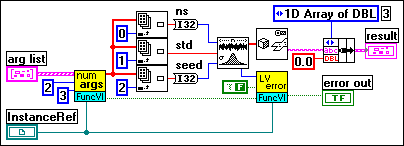
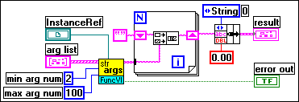
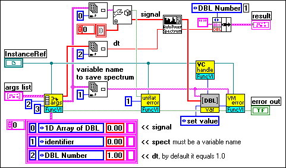
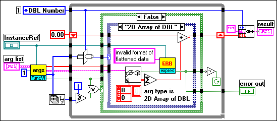
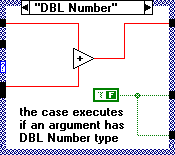
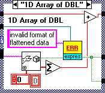
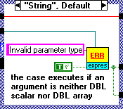
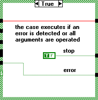

Here are a few references to topics that show basic techniques for developing FuncVIs. For further learning, review the FuncVIs supplied with CalcExpress. You can find the supplied FuncVIs in the folder: <vilib>\addons\CalcExpress\FuncVI.
| Example shows: | Used VIs: |
|
Func - Get list of numeric arguments.vi Func - LV runtime error handler.vi |
| Example shows: | Used VIs: |
|
Func - Get list of string arguments.vi |
| Example shows: | Used VIs: |
|
Func - Get declared arguments.vi Func - VarMan error handler.vi Func - Unflatten-From-String error handler.vi Exp - Get VC handle.vi |
| Example shows: | Used VIs: |
|
Func - Get list of arguments.vi Exp - Error handler.vi |
The figure below shows the block diagram of FuncVI that performs the function
GaussianNoise(ns, std, seed)
The function returns 1D Array of DBL that contains Gaussian noise pattern. The function operates on arguments that must have the DBL Number data type.
For more information on Gaussian noise generation, see help for Gaussian White Noise.vi that is used in the FuncVI to perform the function.
FuncVI-GaussianNoise.vi Diagram

The figure below shows the block diagram of FuncVI that performs the function
ConcatenateStrings(s1,s2...,sn)
The function concatenates its string arguments and returns the resulting string. A number of arguments, on which the function can operate, is in the range from 2 up to 100.

The figure below shows the block diagram of FuncVI that performs the function
APSpectrum(signal, spect ,dt)
The function computes the power spectrum of a time-domain signal and saves it in a given variable. The function returns the line frequency interval of the power spectrum (df).
For more information on spectrum computing, see help for Auto Power Spectrum.vi that is used in the FuncVI to perform the function.

The figure below shows the block diagram of FuncVI that performs the function
SumDBL(x1 ... ,xn)
The function computes a total sum of all its arguments. The function operates on arbitrary non-zero number of arguments, which can have one of the following data types: DBL Number, 1D Array of DBL, 2D Array of DBL. If an argument is an array, the function sums all its elements and adds them to the total sum.




